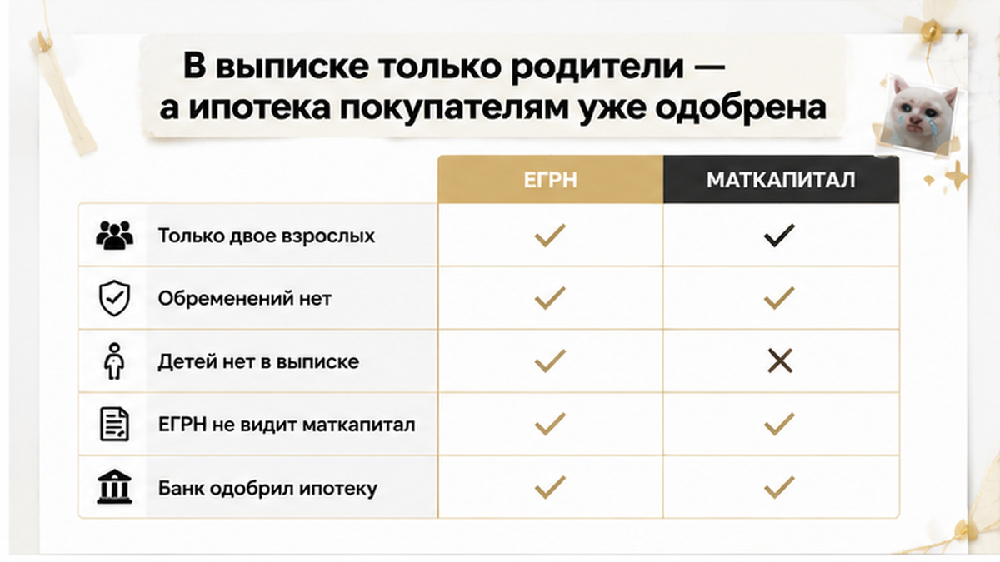
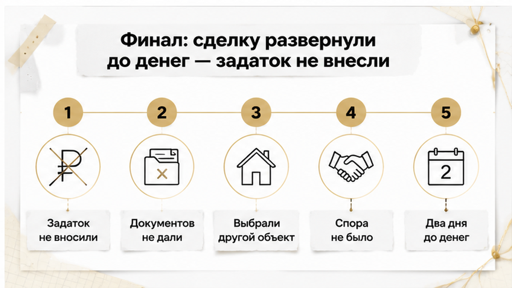
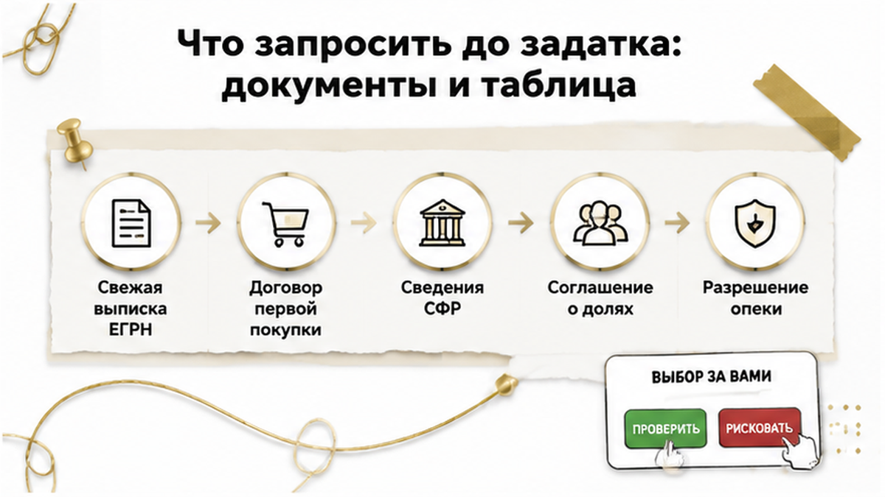

Ипотека одобрена. Выписка чистая. Задаток — послезавтра. Сделки не будет.
История тюменская и, к сожалению, обычная. Семья брала вторичку, банк одобрение уже дал, продавцы вежливо торопили с задатком, а в актуальной выписке ЕГРН стояли двое взрослых собственников — муж и жена, без обременений и третьих лиц. За два дня до передачи денег на финальной проверке всплыло то, чего в выписке нет и быть не может: при первоначальной покупке этой квартиры использовался материнский капитал, а доли детям так и не выделили. Покупатели не внесли ни задатка, ни аванса — развернулись и ушли на другой объект. Дальше разберу, почему «чистая» выписка ничего не говорит про маткапитал, что запросить до денег и что бывает, если этот вопрос проскочит мимо.
Сразу оговорюсь: это собирательный тюменский случай из практики, а не конкретное судебное дело. Без фамилий, адреса, банка, сумм и номеров производств. Важна механика, а не персоналии.
Меня зовут Святослав Шакин, The Риэлтор, Тюмень. Работаю по документам, а не по обещаниям продавца. Если сейчас смотрите вторичку и хочется живого второго мнения — пишите: Telegram или MAX.

Проверку почти всегда начинают с выписки ЕГРН. Это правильно. Выписка честно показывает, кто записан собственником, в каких долях, есть ли ипотека, арест, запрет на регистрационные действия.
Двое взрослых, по 1/2, обременений нет. Картинка спокойная. Именно на спокойной картинке люди и расслабляются.
Только ЕГРН отвечает на вопрос «что зарегистрировано». А не на вопрос «как эту квартиру покупали в прошлый раз». В реестре нет строки «здесь был материнский капитал». Нет отметки, что у собственников есть дети, которым по закону положены доли. Нет ответа, выполнили родители обязанность оформить жильё на всю семью или забыли про неё на восемь лет.
Отсутствие детей в выписке не означает, что у детей нет прав. Оно означает ровно одно: доли не зарегистрированы.
Разница принципиальная. Если право детей возникло из закона и заявления о распоряжении маткапиталом, а записи нет — это не «чисто». Это «не оформлено». И всплывает такое рано или поздно: на одобрении, на регистрации перехода права, иногда через годы. Я уже разбирал похожий сюжет, где ипотеку одобрили, а регистрацию отменили из-за одной строки в ЕГРН: одобрение банка — это оценка заёмщика и объекта в первом приближении, а не справка о чистоте истории квартиры.
В нашей истории покупатели держали в голове привычное: «раз банк проверил — значит нормально». А продавцы аккуратно подгоняли: «рынок живой», «есть другие желающие», «давайте фиксировать задаток». Классическая конструкция, где у покупателя просто не остаётся времени на вопросы.
Финальная проверка перед деньгами — это не «ещё раз посмотреть выписку». Это момент, когда собираешь историю объекта целиком: на основании чего продавцы стали собственниками, чем платили, есть ли дети, что происходило с квартирой между покупкой и продажей.
Там и обнаружился след материнского капитала при первоначальной покупке.
Дети у продавцов есть. Соглашения о выделении долей нет. Записи о детях в ЕГРН нет. Три обстоятельства сошлись в одной точке — и это уже не подозрение, а рабочая версия, которую нужно закрывать документами. До денег, не после.
Напомню правило, из которого всё вытекает. По 256-ФЗ, если материнский капитал направлен на жильё, помещение оформляется в общую собственность владельца сертификата, супруга и всех детей, с определением размеров долей по соглашению. Всех — а не только того ребёнка, «на которого дали» сертификат.
До 2020 года под это оформляли отдельное нотариальное обязательство. Сейчас Социальный фонд поясняет: отдельное обязательство не требуется, обязанность вытекает из закона и поданного заявления о распоряжении средствами. А перед продажей такого жилья позиция фонда прямая: сначала оформить доли всем членам семьи, потом продавать.
То есть невыделенные доли — не мелкая формальность, которую продавец «дооформит потом». Это незакрытая обязанность, из-за которой продажа в нынешнем виде становится уязвимой. И покупатель узнаёт о ней последним: в его руках одна выписка, а выписка молчит.
Скрытое право, которое всплывает буквально накануне денег, — сюжет не только про маткапитал. Та же механика была в истории, где продавец говорил «в браке не был», а перед авансом всплыло супружеское право. Общее у них одно: слова продавца и реестровая запись — разные категории. Вторая первую не подтверждает.

Финал здесь скучный. И это лучший вид финала.
Покупатели не стали спорить, требовать скидку «за риск» и слушать обещания. Они попросили документы, подтверждающие, что вопрос с долями закрыт: соглашение о выделении, подтверждение регистрации, сведения о распоряжении маткапиталом.
Документов не появилось. Появились аргументы: «мы всё оформим», «дети маленькие, им ничего не надо», «выделим им доли в новой квартире».
Сделку остановили. Задаток не вносили, аванс не передавали, договор не подписывали. Через некоторое время эта же семья вышла на другой объект и спокойно его купила.
А продавцам, чтобы легально продать свою квартиру, пришлось бы сначала решить вопрос с долями и их регистрацией. И при определённых раскладах — ещё и с органами опеки: после регистрации детских долей продажа требует предварительного согласия.
Ключевой момент, ради которого я и рассказываю эту историю: спора не возникло. Ни иска, ни возврата денег, ни попыток что-то доказать. Потому что проверку сделали до передачи денег.
Разница между «мы вышли из сделки» и «мы судимся с продавцом» измеряется одним шагом и двумя днями работы.
Выписка — хороший документ, не хочу её обесценивать. Свежая выписка закрывает большой пласт вопросов: кто сегодня собственник, в каких долях, есть ли ипотека, арест, запрет на регистрационные действия, зарегистрированы ли доли несовершеннолетних.
Но на один вопрос она не отвечает: использовался ли материнский капитал при первоначальной покупке. Отсутствие детей в выписке не означает, что у детей нет прав — если жильё покупалось с маткапиталом, право возникает из закона и заявления о распоряжении средствами, а не из записи в реестре.
ЕГРН отвечает на вопрос «кто собственник сейчас». Второй вопрос — «за счёт каких денег куплена квартира и кому положены доли» — закрывается договором первоначальной покупки, сведениями СФР и документами банка по прежней ипотеке.
Семья направляет материнский капитал на жильё — по 256-ФЗ квартира оформляется в общую собственность владельца сертификата, супруга и всех детей. Подробности: sfr.gov.ru.
До 2020 года при ипотеке оформляли нотариальное обязательство выделить доли после снятия залога. С 2020 года СФР отдельное обязательство не требует — обязанность из закона и заявления о распоряжении. «Мне не давали обязательства» — неверное прочтение: бумаги нет, обязанность есть.
Сроки: без кредита — в установленный срок после перечисления СФР; при ипотеке — шесть месяцев после погашения и снятия обременения. В разъяснениях 2026 года обсуждают выделение долей до снятия залога — это не универсальный сценарий, подтверждайте по своему банку и опеке.
Позиция СФР по продаже: сначала доли всем членам семьи, потом рынок. См. раздел вопросов и буклет 2026. Обратный порядок — вы финансируете чужую незакрытую обязанность.
Главный красный флаг — не один факт, а сочетание трёх обстоятельств в одной квартире:
По отдельности каждый пункт нейтрален. Вместе — конфигурация из тюменского случая за два дня до задатка.
Стоп-сигналы в разговоре: уклонение от сведений СФР; маткапитал в документах, но нет соглашения о долях; «выделим доли в новой квартире после сделки». Последнее не заменяет урегулирование прав в продаваемом объекте.
Гладкая картинка — хорошая цена, спешка, «смотреть нечего» — тоже сигнал. Я писал об этом, где скидку обещали, а риск прятали. Сам маткапитал — не приговор: вопрос в очерёдности — доли оформлены, опека согласована, сделка идёт.

Вот ради этой части я разбор и пишу. Та остановленная сделка закончилась хорошо не по везению, а потому что вопросы задали до денег.
Порядок простой: сначала закрываем вопрос «покупали ли эту квартиру с участием материнского капитала», и только потом обсуждаем задаток, сроки и торг. Не наоборот.
И ищем мы не «плохого продавца». Мы ищем несостыковку: в выписке двое взрослых, в семье есть дети подходящего возраста, а первоначальная покупка приходится на годы, когда сертификатом пользовались вовсю. Красивая выписка сама по себе тут ничего не опровергает.
Минимальный набор, который я прошу собрать до внесения любых денег:
Маткапитал обычно всплывает из трёх источников: Социальный фонд, первоначальный договор купли-продажи, банковские документы по ипотеке. Ни один не заменяет два других. В договоре прямого упоминания может не быть, а банк видит только свой кусок сюжета.
| Что запрашиваем | Где берётся | Какой вопрос закрывает | Если документ не дают |
|---|---|---|---|
| Актуальная выписка ЕГРН | Росреестр | Кто собственник сегодня, есть ли обременения и зарегистрированные детские доли | Заказываем сами — этот документ от доброй воли продавца не зависит |
| Договор первоначальной покупки | Продавец, его архив документов | Как и на какие деньги квартира была куплена, есть ли след сертификата | Пауза: без основания возникновения права дальше не идём |
| Сведения СФР о распоряжении маткапиталом | Социальный фонд, по обращению владельца сертификата | Направлялись ли средства именно на это жильё | Прямой стоп-сигнал: уклонение здесь стоит дороже любой скидки |
| Документы банка по закрытой ипотеке | Банк-кредитор продавца | Чем гасился кредит, когда снято обременение, с какой даты считать срок на выделение долей | Просим справку письменно; устные заверения не считаются |
| Соглашение о долях и отметка о регистрации | Нотариус, Росреестр | Исполнена ли обязанность перед детьми фактически, а не на словах | Считаем, что доли не выделены, пока обратное не подтверждено записью |
| Разрешение опеки | Орган опеки по месту жительства детей | Возможна ли продажа без ухудшения жилищных прав ребёнка | Ждём согласие до сделки; «получим потом» — не рабочая схема |
Посмотрите на четвёртую колонку. Она важнее первой.
Отказ дать документ — это тоже информация, и часто самая честная за всю сделку. У кого всё оформлено, тот приносит соглашение о долях и говорит: «смотрите, вот регистрация». У кого не оформлено — начинает объяснять, почему ваш запрос неуместен, некрасив и вообще «люди так не делают».
Если сейчас смотрите конкретный вариант в Тюмени и не понимаете, что именно спрашивать у продавца, — напишите, разберём по документам: Telegram или MAX. Один вопрос до задатка обычно закрывает половину тревоги.
Если в ЕГРН указаны только родители, а продавец уверяет, что маткапитала не было — стоит ли продолжать сделку или уходить? Напишите в комментариях, как поступили бы вы: мне интересно, где для вас граница между осторожностью и перестраховкой.
Частая схема: ипотека + маткапитал на погашение. Пока залог — доли не выделить; срок — шесть месяцев после погашения и снятия обременения. В 2026 обсуждают выделение до снятия залога — подтверждайте по банку и опеке, это не универсально.
Если детские доли уже в ЕГРН — нужно согласие опеки. «Доли в новой квартире» не закрывает права в продаваемом объекте. Одобрение банка покупателя историю квартиры не проверяет — как в кейсе, где ипотеку одобрили, а регистрацию развернули из-за строки в ЕГРН.
Нарушение обязанности выделить доли не означает автоматического изъятия квартиры. Возможны требования оформить доли, возврат средств маткапитала, оспаривание сделки — от СФР, опеки, прокуратуры или самих детей.
При недействительности — ст. 167 ГК: стороны возвращают полученное. На практике деньги взыскивают с продавца, у которого их может уже не быть — как в истории, где расписку написали, а денег на счёте нет. Срок «три года» из обзоров — позиция конкретного спора, не универсальная норма.
Вернусь к тем покупателям: они не потеряли ни рубля, потому что вопрос про маткапитал прозвучал за два дня до задатка. Пока деньги не переданы — вы уходите к другому объекту. После задатка разговор дорожает.
Вторичку в Тюмени покупают каждый день — если смотреть до денег. Маткапитал в истории — не приговор: доли оформлены — идём дальше; нет — продавец приводит документы в порядок. Не «бегите с рынка», а «смотрите до аванса».